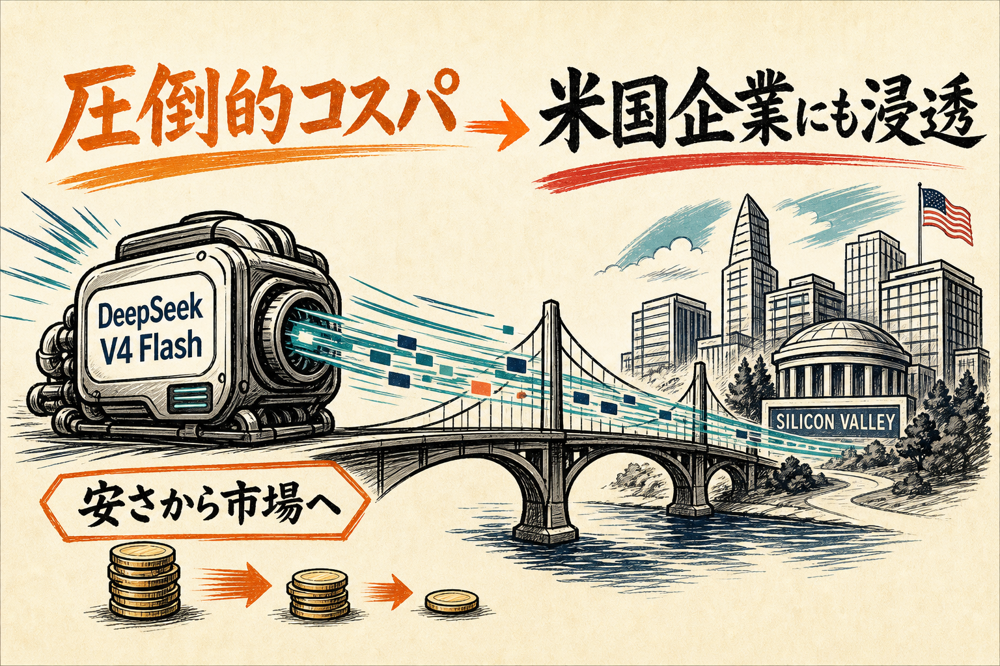

08.05 / RELEASE01
DeepSeek V4 Flash正式版
コスパ競争を再点火
Tencent Cloudが8月5日、DeepSeek V4-Flash正式版を提供開始。7月末の更新を踏まえ、推論効率と導入コストを武器に実運用へ踏み込む。
重要なのは単体ベンチマークより、安価なモデルがAPI市場と企業導入の選択肢を増やすこと。米企業での利用増も、価格圧力の背景として効いている。
正式版 8/5高速・効率重視米企業利用は背景データ